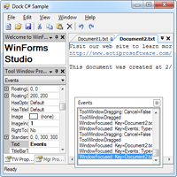

Docking/MDI includes powerful docking window management functionality, Tool windows can be dragged and docked on any side of the host container, nested in hierarchies, or floated in their own rafted window. Additionally they can be collapsed into auto-hide mode and hidden, or moved to the MDI area. Tabbed and standard MDI (multiple document interface) modes are both supported, along with tool window inner-fill mode.